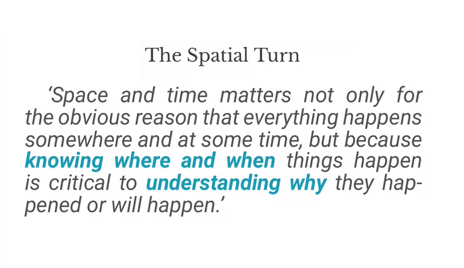
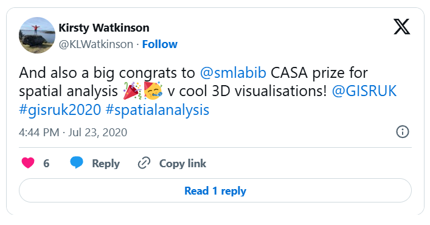
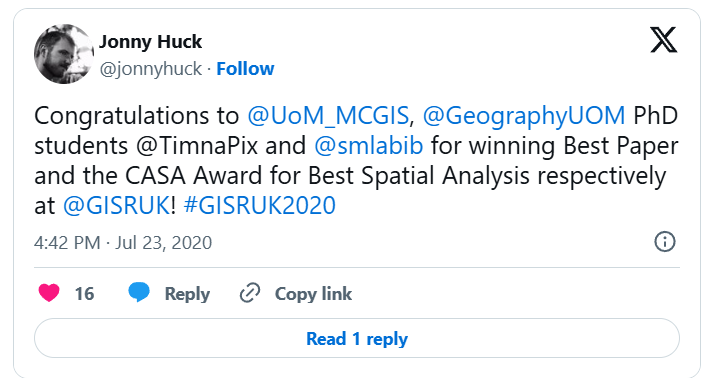
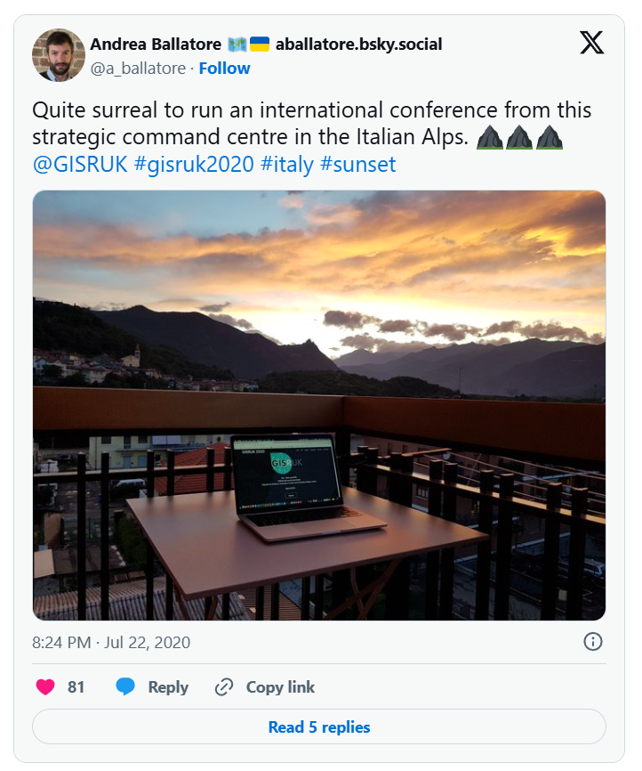
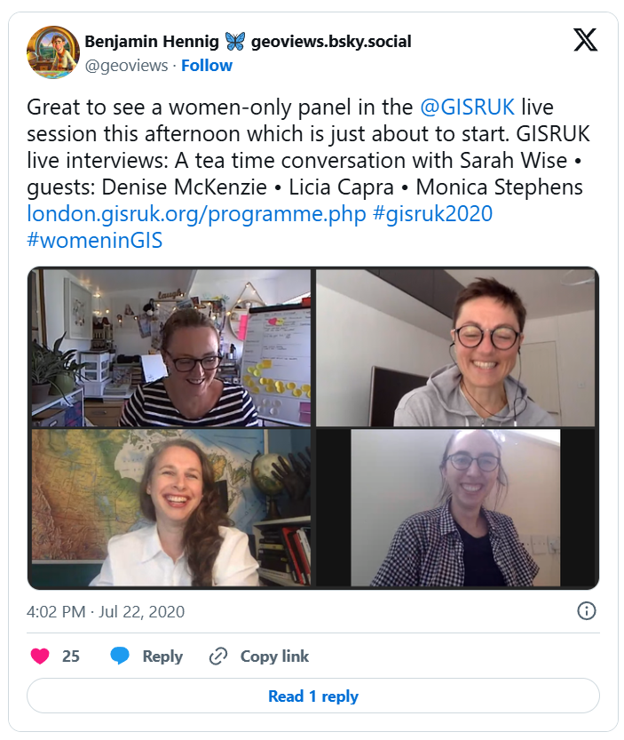

GISRUK2020: A brave new world

Online conferences are everywhere now – and everything now has online as a prefix. The GISRUK 2020 conference was no exception, and originally scheduled for 21th – 24th April, it was postponed and moved online, to 21st to 23rd July. GISRUK is the largest annual GIS research conference, bringing together academics, researchers and students, as well as those from government, commercial and other sectors interested in GIS and its applications.
We had a excellent selection of keynotes, including Tao Cheng, Mark Birkin, Bruno Sánchez-Andrade Nuño and Krzysztof Janowicz. One theme that cropped up several times was that of networks and graphs as a new spatial data format, that one day might sit alongside vector and raster data sets – I will need to update my Intro to GIS slides! Tao talked about how we can think about networks underpinning urban areas, that we can turn any spatial data structure into a network, and that often the network links are much more important that the nodes themselves. Also, graphs and networks lend themselves to temporal data, with network links changing over time, which traditional GIS data structures have struggled to capture. Krzysztof Janowicz extended this to talk about knowledge graphs, linked data and the semantic web, and how graphs as a data structure underpin this. This allowed him and his team to develop knowledge based geo-enrichment, allowing us to ask questions of data that required both geo and non-geo inputs. He also included a great quote:

As usual at GISRUK, there were a great selection of ECR presentations, showing a huge diversity of PhD and ECR work (and even some MSc work!). Of particular note for me was Thomas Gilbert talking about VocalGeo: Using Speech to Provide Geospatial Context in the Classroom, using voice input in a classroom setting to control a digital globe. I was also very impressed by Timna Denwood, presenting her work on Alternative Interfaces for Improved Representation in Web-Based PPGIS, using an example of the islands of Barra & Vatersay, the western most inhabited part of Great Britain.
Accessibility and Global Reach
One massive plus of the online model is that it increases accessibility, and we had a great many more people register for GISRUK online than in person (~600 registrations, compared with 200 in person). We had people from all across the world, which is a great change to our usual UK and northern Europe focus.
Award Winners
As usual, GISRUK gives prizes to the Best Paper and Best Short Paper, voted on by the attendees. I would like to offer my congratulations to the prize winners this year:
Best Paper
Timna Denwood
Alternative Interfaces for Improved Representation in Web-Based PPGIS
Proper chuffed to win the award for Best Paper ar @GISRUK !!
Not sure Phoebe the pup appreciates how exciting this is however… 🤣🍻🎉
— Timna (@TimnaPix) July 23, 2020
Best Short Paper
Christopher Lloyd
Using machine learning to classify urban building footprints into residential / non-residential categories, in low income settings
CASA Award for Best Spatial Analysis
SM Labib
Greenness visibility using viewshed analysis: A pilot study in Manchester

And also a big congrats to @smlabib CASA prize for spatial analysis 🎉🥳 v cool 3D visualisations! @GISRUK #gisruk2020 #spatialanalysis
— Kirsty Watkinson (@KLWatkinson) July 23, 2020

Conference Organization
Every year the local organising committee do a fantastic job pulling the conference together, and Andrea Ballatore (Brikbeck) and James Haworth (UCL) did a great job this year:

Quite surreal to run an international conference from this strategic command centre in the Italian Alps. ⛰️⛰️⛰️ @GISRUK #gisruk2020 #italy #sunset
— Andrea Ballatore 🗺️🇺🇦 (@a_ballatore) July 22, 2020
Finally, I look forward to seeing you at the next GISRUK, which will be hosted by Cardiff University. Details to follow, please join the mailing list to find out more.
Social Elements and Networking
No conference is complete without the social element, and I have yet to attend a conference that truly cracks this problem. No amount of video conferencing software can replicate waiting in line for lunch and having a chat with whoever happens to be there! GISRUK has a social roulette space where people could go and chat, but it didn’t get a lot of use, potentially because of timing and a 10:00 – 17:00 programme being quite full on. Two elements that worked really well and created a good range of social interaction was the social quiz and tea time conversation with Sarah Wise. James Haworth confirmed the British tradition of being great at creating quizzes by putting together a four round quiz for us; identifying universities based on their logos, identifying cities that GISRUK had been to before based on interesting facts (e.g where was Marks and Spencer founded?), some great GCSE Geography questions(!) and identifying cities based on aerial photos.
A massive “well done” to @a_ballatore and @SpaceTimeJames for a fantastic first day of the first virtual @GISRUK conference! 👏👏👏
Maybe an easier social quiz next year? Not that I am embarrassed by my 15/40 score or anything, but… 😅
— Stef De Sabbata (@maps4thought) July 21, 2020
Social wise, this was continued the following evening by an absolutely amazing panel discussion hosted by Sarah Wise. The panel, Denise McKenzie (Benchmark Initiative, Geovation, UK), Licia Capra (Professor of Pervasive Computing, Department of Computer Science, University College London) & Monica Stephens (Ph.D., University of Arizona, 2012), fielded Sarah’s questions with ease and provided amazing insight into their current work, challenges facing the GIS community. She also included some fun questions, including your favourite game (I’m glad to see Settlers of Catan was mentioned several times!), and what tattoo would you get to represent your work, in a reflective, pessimistic Pacific Rim style (I can’t remember the exact phrasing – please do comment if you remember!). Monica advised everyone to start blogging and putting your thoughts out there – something I can heartily recommend. Denise also gave some great careers advice for the ECRs (and all of us) listening – be open to what opportunities come your way, and that no-one would have been able to describe her current role to her when she was 21! This particularly resonates with me; my career plan was to do the traditional academic path and become a lecturer, professor etc. and I have taken a wildly different route, but suffice to say that I am happy with what I am doing, and happier that I think I would be if I was a lecturer (although that is another blog post!).

Great to see a women-only panel in the @GISRUK live session this afternoon which is just about to start. GISRUK live interviews: A tea time conversation with Sarah Wise • guests: Denise McKenzie • Licia Capra • Monica Stephens #gisruk2020 #womeninGIS — Benjamin Hennig (@geoviews) July 22, 2020